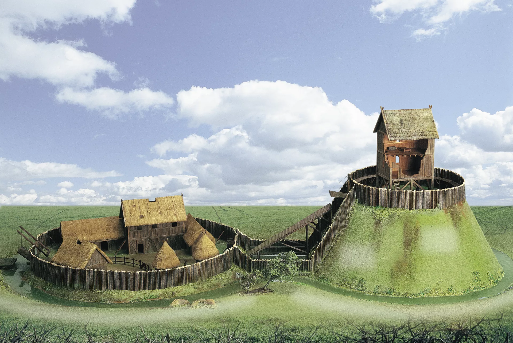

Un castel feudal este o structură fortificată construită în Evul Mediu, destinată să ofere protecție și să servească drept reședință pentru nobili și cavaleri. Aceste castele erau adesea construite pe înălțimi strategice și erau înconjurate de ziduri groase și șanțuri pentru apărare.
În interiorul castelului se găseau diverse clădiri, inclusiv locuințe, grajduri, depozite și capele. Castelele feudale erau centre de putere și administrare, unde nobilii își exercitau autoritatea asupra teritoriului înconjurător.
Castelele feudale au evoluat de-a lungul timpului, de la structuri simple din lemn și pământ la fortărețe complexe din piatră, cu multiple linii de apărare și facilități elaborate.
Castelele feudale au apărut în Europa în secolul al IX-lea, ca răspuns la necesitatea de a proteja teritoriile de invazii, în special cele ale vikingilor, maghiarilor și sarazinilor. Inițial, erau construite din lemn și pământ, fiind cunoscute sub numele de motte-and-bailey  , dar au fost rapid înlocuite cu structuri din piatră pentru a oferi o mai bună apărare.
Evoluția castelelor feudale a fost influențată de progresele tehnologice în domeniul militar, precum apariția armelor de asediu, cum ar fi catapultele și berbecii. Acest lucru a dus la dezvoltarea unor fortificații mai complexe, cu ziduri mai groase, turnuri de apărare, hersă, șanțuri cu apă și alte elemente de protecție.
Castelele feudale nu erau doar centre de apărare, ci și centre economice și sociale. În interiorul castelului se desfășurau activități comerciale, precum târguri și piețe, iar seniorul feudal colecta taxe și impozite de la țăranii din jur.
De asemenea, castelele serveau ca locuințe pentru nobili și familiile lor, precum și pentru servitori, soldați și alți membri ai societății feudale. În interiorul castelului se organizau evenimente sociale, precum banchete, turnee și ceremonii religioase.
Domeniul feudal reprezenta unitatea economică de bază în sistemul feudal, fiind format din pământurile controlate de un senior feudal. Acesta includea terenuri agricole, păduri, sate și, adesea, un castel. Țăranii de pe domeniu erau obligați să presteze muncă și să plătească taxe seniorului în schimbul protecției.
Castelul era centrul administrativ al domeniului feudal, de unde seniorul își exercita autoritatea și controla activitățile economice și sociale. De asemenea, castelul servea ca refugiu pentru țărani în caz de invazii sau conflicte.